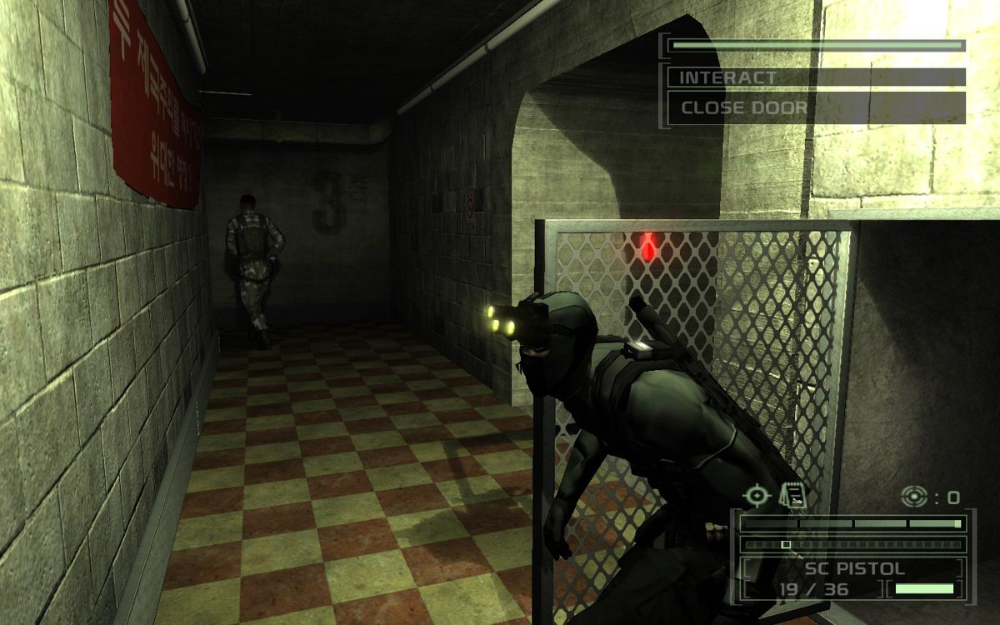
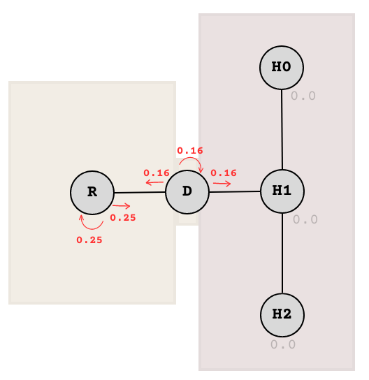
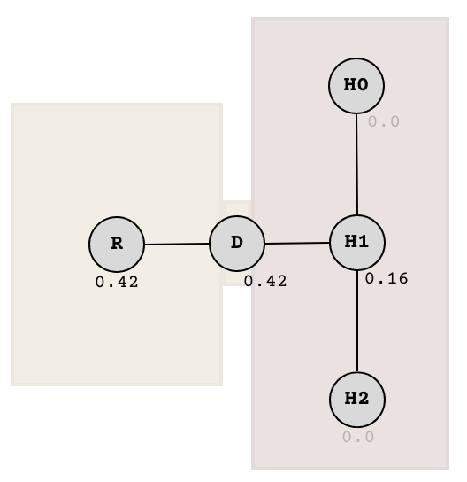
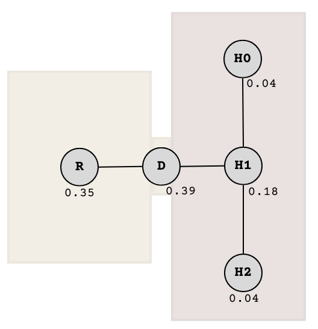
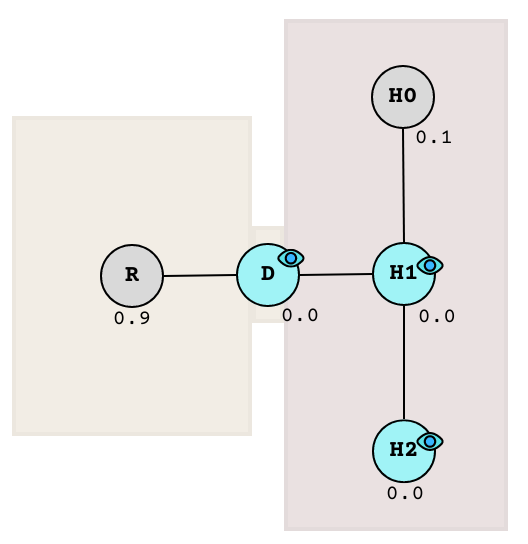
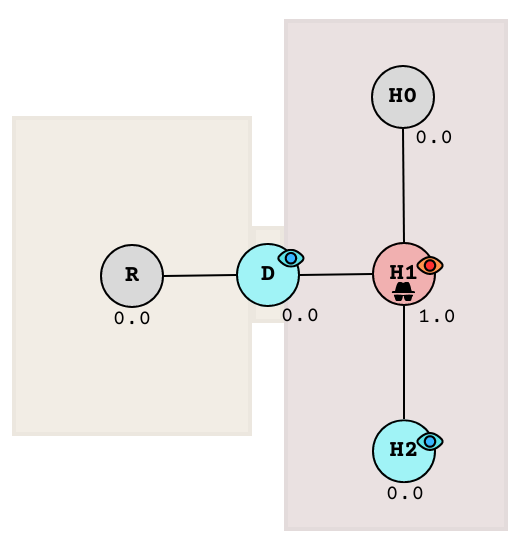

Hi, this post is about a game AI algorithm for stealth games.
But first, here’s a preview demo! Full demo at the end of this post. In between, I’ll explain the background, the process, and the results!
Background
I enjoy stealth games. However, I felt like the genre has become formulaic. Nowadays, we have standardised light, shadow, and noise mechanics. We almost always get discrete levels of alertness where on one end NPCs have wallhacks while on the other, NPCs have amnesia.

Screenshot of Splinter Cell: Chaos Theory from mobygames.com. This game is good.
The most immersion-breaking moment for me was when you get spotted, the subsequent investigation consists solely of staring at the ground where you were last seen. Like when you get spotted at an entrance to a room, guards will just stare at the doorway. Why not check inside the room?
Yeah, I know, game designers don’t deem smart game AI “fun”. But an easy predictable game is no fun! Whatever, I just wanted to share this prototype.
What was lacking in stealth game AI is inference - the ability to infer that when a target enters a room, then they subsequently must be inside the room.
A room and a hallway
As an example, here are a room and a hallway with a doorway in between, modelled as a graph:
If we assign a number to each node representing the probability that the target (the player) is there, we can start making inferences of where the target could be at later times.
Let’s say the target was just seen in room R. At that exact moment, there is complete certainty that the target is there, so node R will be assigned a probability of 1.0.
After that moment however, the certainty fades. Because the target could have exited the room next, or maybe they stayed.
The graph is recalculated to reflect this uncertainty by distributing the probability value of 1.0 from node R to each possible choice of node - D (exit) and R (stay). We don’t know the likeliness of either happening so we can just assume equal chances, giving them 0.5 each.
Now there is 50% probability that the target is in the room, and 50% in the doorway. This process is repeated for each node over time to calculate the target’s potential location at any given moment.
Let’s do another iteration. The next one is a bit tricky, but it’s all calculated the same. We just need to calculate the distribution from each node in parallel, like so:

Split the probabilities per node to each possible choice (including staying).

Then sum up the values that arrived in each node.
Explanation of above: The 0.5 at R is split into two, giving 0.5 / 2 = 0.25 each to R and D. Meanwhile, the 0.5 at D is split into three, giving 0.5 / 3 ≈ 0.16 each to R, D, and H1. Then node values are added together in a separate step after the split.
After some time, we will get a picture of where the target is likely to be and a smarter game AI can utilise this to send guards on a more realistic investigation route.
Another iteration and we get this:

The state after some time
What I’ve just described is some generalisation of a Markov chain. Well, it’s not exactly accurate to call it that since the Markov chain is just one part of the algorithm. You’ll see why in the next section.
Disclaimer: I wasn’t thinking about Markov chains while developing this algorithm. The first version back in 2013 was based on crude counting and was more like a potential field. (Btw, it was in Flash.) The Markov chain concept that I learned (2023) helped me make the calculations more accurate and the numbers more realistic.
Observer effect
Suppose a guard did come to investigate the nearest highest probability node (the doorway D). Coming from the south, the guard just saw the doorway and the immediate hallway in their field of vision - There are two possibilities: Either (1) they saw nothing, or (2) they saw the target.
In case (1) where the guard saw nothing, we need to update the seen nodes according to the guard’s a posteriori observation.

After observation
The nodes that were seen having no target at their locations are forced to a probability of 0.0, because if you think about it, that makes sense. The remaining nodes are then scaled so that they still add up to a total of 1.0 (This is an invariant in any case).
To illustrate, here’s a table that details each intermediate step:
| Node |
Prior
probabilities |
Values after
observation |
Final values
after rescaling |
| R |
0.35 |
0.35 |
0.9 |
| D |
0.39 |
0 |
0 |
| H0 |
0.04 |
0.04 |
0.1 |
| H1 |
0.18 |
0 |
0 |
| H2 |
0.04 |
0 |
0 |
After updating the probabilities, the state of the graph tells us that the target is around 90% likely to be in the room R and 10% in the far hallway H0.
The game AI can simply send the guard to the highest node based on the updated probabilities (this case, the room R). It can do this again and again, which will result in a seemingly organic and responsive searching behaviour from the AI guard. No predefined patrol routes needed.
Another way to go about this is to keep track of probabilities in the form of rational numbers - separately tracking the numerators and the denominators. You only need to store the numerator per node, while there is one global denominator, which is the sum of all the numerators. This is what I did for my demo implementation.
In case (2) where the guard saw the target, a similar but more drastic approach applies. The node containing the target is assigned 1.0 while the rest of the nodes in the whole graph are cleared back to 0.0. The target can only be in one place at at a time!

After observation of target
It stays that way as long as the guard can see the target. When the guard loses sight of the target again, we just continue the Markov inference and the probability values will spread again like a wave. The cycle of chasing, investigation, and hiding continues.
Similar to quantum mechanics, an act of observation collapses the superposition. There seems to be an underlying mathematical truth that spans across Markov chains, quantum mechanics, Bayesian networks, and video game mechanics. :P
It’s best to just see it in action. Play with the demo in the following section.
Demo
I implemented this algorithm in JavaScript so you can play with it right here. In this implementation, the world is a 2D grid where each tile is a node in the Markov graph.
Click a tile to command the target (the green character ) to move. A blue fog will indicate the probabilities of each tile.
Have fun playing hide and seek!
Tip: Press P to toggle visibility of the probability field. Press N to toggle numbers between none, percentage, and log-scale. (Keyboard only)
Conclusions
- Emergent behaviours can be described:
- Chasing: Upon losing vision, the guard starts chasing in the direction where you ran away (without the guard actually seeing where you are).
- Searching: As the chase continues, the path begins branching, and the probability dilutes. The guard gradually transitions from chasing behaviour to a searching behaviour.
- Patrolling: As the probability distribution approaches equilibrium, the guard devolves into a plain patrol.
- There is a spectrum from chasing to patrolling.
- The probability spreading process can be drastically sped-up by implementing Markov chain transitions using matrix multiplication with a transition matrix.
- The search route quality can be improved significantly. Currently it just sets the tile with the highest potential as the destination with an A* pathfinder, resetting the process whenever the tile becomes invalid.
- One improvement might involve incorporating the potential field as weights in the pathfinding algorithm itself to generate a more efficient and sweeping route.
Sadly, the name “Wave Function Collapse”has already been claimed by a different video game algorithm, so I can’t give this one a cool quantum name anymore.
Bonus demo! 2 guards.
Special thanks:
Update: Related stuff I found: